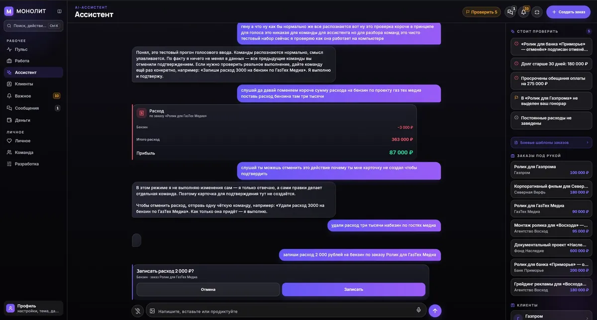

1:08
1:08
FABRIKИмиджевый ролик · ГК OSTOV
Кино для бизнеса и людей: реклама, имиджевые фильмы, клипы, свадьбы. А ещё — сайты, приложения и автоматизация, собранные той же рукой.
Избранное из портфолио: наведите — оживёт, нажмите — откроется целиком. Полное портфолио по темам — на отдельной странице.
1:08
 1:22
1:22
 2:59
2:59
 10:47
10:47
 2:37
2:37
 1:59
1:59
 0:31
0:31
 4:11
4:11
 0:19
0:19
 0:54
0:54
 1:16
1:16
 0:16
0:16
 0:15
0:15
 0:45
0:45
 1:00
1:00
Камера пишет плоский, блёклый материал — так задумано. Настоящий вид кадру даёт грейд: глубина, воздух, настроение. Крашу в DaVinci Resolve — свои съёмки и чужой материал.
Справа тот же ролик, что в фоне первого экрана: каждый кадр показан до и после цвета. Разница — и есть работа.
Стоп-кадры из проектов — по три на съёмку. Листайте вбок.


Строю сайты, приложения и автоматизации с ИИ-инструментами: быстро, дешевле студий и со вкусом человека, который каждый день собирает кадр.

Приложение для тех, кто снимает: заказы, клиенты, деньги с налогом. Модуль ШТАБ приносит заявки с рынка сам.
Смотреть, как это работает →
Сайт кинорентала и продакшена: каталог техники, портфолио, заявки — статика без движка.
Смотреть кейс →
Телеграм-боты, автопубликация контента, связки сервисов и ИИ в рабочие процессы — под вашу задачу.
Обсуждается лично
Я — Савелий Бубнов, оператор-постановщик и колорист. Снимаю рекламу, имиджевые фильмы, клипы и свадебное кино; каждую работу довожу до конца сам — от раскадровки до финального грейда.
До продакшена строил ресторанный бизнес, поэтому с заказчиком говорю на языке задач и денег, а не таймкодов. Мне не нужно объяснять, зачем ролику продавать.
Третье ремесло — цифровое: собираю сайты, приложение MONOLITH и автоматизации с ИИ-инструментами. Один человек, три инструмента, общий вкус.


Стартовые вилки. Точная смета — после брифа: она зависит от задачи, сроков и состава работ.
Работаю по договору. Предоплата — часть сметы, финал — после сдачи. Если задача нестандартная, так и напишите: разберём и посчитаем честно.
Разборы цен: сколько стоит рекламный ролик · сколько стоит цветокоррекция · как выбрать свадебного видеографа · сколько стоит свадебный видеограф · сколько стоит снять клип
Как это устроено: как снимается рекламный ролик — все этапы · договор с видеографом — что проверить · все статьи и уроки
Уроки DaVinci Resolve: порядок цветокоррекции · как читать скоупы · колёса Lift, Gamma, Gain · все восемь уроков
Гайды для тех, кто хочет сам: как снимать на телефон · цветокоррекция своими руками · обучение съёмке с нуля
Бесплатные инструменты: конструктор договоров и актов на фото- и видеосъёмку
Пишете в телеграм пару строк о задаче — отвечаю в тот же день.
Созвон или переписка: цель, референсы, сроки, площадки.
Фиксируем состав работ, цену и календарь. Без скрытых доплат.
Съёмка или разработка с промежуточными показами — вы видите ход дела.
Правки, финал, передача исходников и мастеров. Всё ваше.
База съёмки, DaVinci Resolve, колористика, свет и приборы на площадке. Индивидуально, онлайн или очно — от 3 000 ₽ за занятие.
Телеграм-канал про съёмку, цвет и продакшн изнутри: разборы кадров, бекстейджи, инструменты. Посмотрите, как я думаю, — до того, как писать.